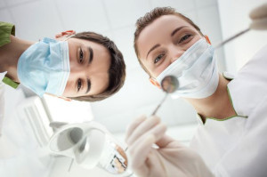

Як знайти "свого" стоматолога - чек-ліст
Як ми шукаємо лікаря?
Як правило, це відбувається за допомогою мережі інтернет, а частіше – за порадами знайомих. Ні в тому, ні в іншому немає нічого поганого, однак слід усвідомлювати підводні камені тих двох шляхів:
1 – інформація на сайті клініки може нести рекламний характер, інформація на форумах може також бути проплаченою рекламою чи антирекламою. У будь-якому випадку, не варто покладатися на ці джерела стовідсотково. На сайті клініки варто зважати на інформацію про сучасне обладнання, освіту та досвід лікарів та проходження ними різноманітних курсів підвищення кваліфікації . Якщо маєте звичку шукати відгуки на форумах чи в соціальних мережах, звертайте увагу на часовий проміжок, у який були залишені ці відгуки, а також на їх авторів . Окрім того, оцініть шаблонність текстів, можете також їх частинами "прогуглити" на аутентичність.
2 – хоч рекомендації знайомих є для нас часто найавторитетнішими у плані вибору лікаря чи клініки, слід пам'ятати, що такий спосіб може і навпаки зашкодити. Це може мати місце по банальній причині: <<**Всі люди різні**>>. Той лікар, що сподобався вашій сусідці, може справити на вас протилежне враження. Це, наприклад, не значить, що не варто йти до лікаря, якого порадила подруга, з якою у вас різні політичні погляди, це всього лише значить, що варто пам'ятати про цей фактор і не покладатися повною мірою на чийсь досвід.
Факторів впливу на тандем <<лікар-пацієнт>> безліч. Тому орієнтуватися доведеться як на своє критичне осмислення ситуації, так і на ... упс, свої відчуття. Бо від Вашої довіри лікарю справді великою мірою залежить ефект лікування.
Якщо ситуація не вимагає терміновості, приготуйтесь до того, що, можливо, Вам доведеться відвідати кількох лікарів – поспілкуйтеся з ними на консультації, задайте питання, які Вас цікавлять, складіть орієнтовний кошторис лікування, якщо плануєте великий об'єм роботи.
Тож як підвищити свої шанси обрати саме Вашого стоматолога? Наводимо чек-ліст, який, сподіваємося, Вам у цьому допоможе.
- Задавайте питання, які Вас цікавлять. Навіть якщо Ваші уявлення про якісь речі не збігаються з думкою лікаря, необхідно дізнатися чому;
- Задавайте питання про сучасні підходи та тенденції в його області – стоматологія розвивається особливо стрімко і якщо лікар орієнтується в сучасних напрямках, заснованих на доказовій медицині, то дуже ймовірно, що пломби триматимуться довше :)
- Цінуйте лікаря, який охоче відповідає на Ваші запитання, та приділяє Вам свій час;
- Гарний знак, якщо лікарю притаманна пацієнтоорієнтованість, тобто він бере до уваги Ваше самопочуття, розробляє та пропонує паралельні стратегії щодо лікування та обговорює це з пацієнтом, залишає за ним останнє слово;
- Важливо, щоб висновки та рекомендації щодо Вашого здоров'я були повністю зрозумілими для Вас – завжди перепитуйте та уточнюйте – це Ваше здоров'я;
- Дуже важливо, коли лікар не лише приділяє гідну увагу процесу лікуванню, а й наголошує на важливості профілактичних заходів, покликаних попереджати розвиток ускладнень та виникнення повторної ситуації"
А ми, про всяк випадок, нагадаємо, що візит до лікаря-стоматолога необхідно здійснювати хоча б раз на рік із профілактичною метою. Приємних Вам візитів та яскравих посмішок!
